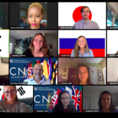
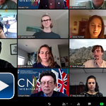

CNS strives to combat the spread of weapons of mass destruction (WMD) by training the next generation of nonproliferation specialists and disseminating timely information and analysis. It is the largest nongovernmental organization in the United States devoted exclusively to research and training on nonproliferation issues. It is located at the Middlebury Institute of International Studies at Monterey.
CNS is deeply committed to diversity, inclusion, and equity, both within our organization and in the nonproliferation and international security field writ large.
- The CNS Young Women in Nonproliferation initiative is committed to exposing WMD nonproliferation and disarmament issues to more women at US colleges and universities. By doing so, CNS hopes to encourage young women to consider careers in this field. CNS also conducts events at women’s colleges and matches undergraduate women who are interested in this field with mentors.
- As part of its ongoing efforts to increase and promote DEI, CNS is a proud supporter of and partner with Women of Color Advancing Peace and Security (WCAPS), and maintains a particularly close relationship with the WCAPS-West Coast chapter.
CNS Locations
Monterey, CA
James Martin Center for Nonproliferation Studies (CNS)
Middlebury Institute of International Studies
460 Pierce Street, Monterey, CA 93940
Phone: (831) 647-4154
Fax: (831) 647-3519
E-mail: cns@miis.edu
Washington, DC
James Martin Center for Nonproliferation Studies (CNS)
1400 K Street, NW, Suite 1225
Washington, DC 20005
Phone: (202) 842-3100
Fax: (202) 842-0556
Learn more about our Washington, DC Office
Vienna, Austria
Vienna Center for Disarmament & Non-Proliferation (VCDNP)
Andromeda Tower, Floor 13th
Donau-City Strasse 6
1220, Vienna Austria
Phone: +43 (1) 236-9482
Fax: +43 (1) 269-9124
E-Mail: info@vcdnp.org
Web: http://vcdnp.org
CNS Center-Related Articles
- Short Course: Tracking North Korea’s WMD and Sanctions Evasion with Open SourcesNew course teaching cutting-edge research techniques, tools, and resources used by CNS experts.
- Intensive Course on WMD Nonproliferation and Security for Women in STEM in AfricaIn partnership with AFRICSIS, this online course is for university professors, researchers, practitioners, government officials, and other female professionals.
- International Advisory Council Annual Meeting 2020Three substantive sessions and a deep dive with keynote speaker Rose Gottemoeller.
- In Memoriam: Dennis M. GormleyCNS mourns the passing of a leading expert on missiles.
- New Podcast: – The Deal: The story of the Iran nuclear dealHow it came together, how it fell apart, and what that means for the rest of us.
- IAEA Marie Sklodowska-Curie Fellowship ProgrammeScholarships available for current and prospective MIIS students
- Ambassador Elayne Whyte Gómez Joins International Advisory CouncilCNS welcomes the extraordinary diplomat—and MIIS alumna—to the IAC.
- Next-Gen Simulation on North KoreaAn immersion into the world of realpolitik and diplomacy.
- A Hybrid Education Model in PracticeA successful conclusion to phase one of the 2020 Undergraduate Fellowship.
- In Remembrance of Bruce BlairThe international peace and security field lost one of its most distinguished members this week.